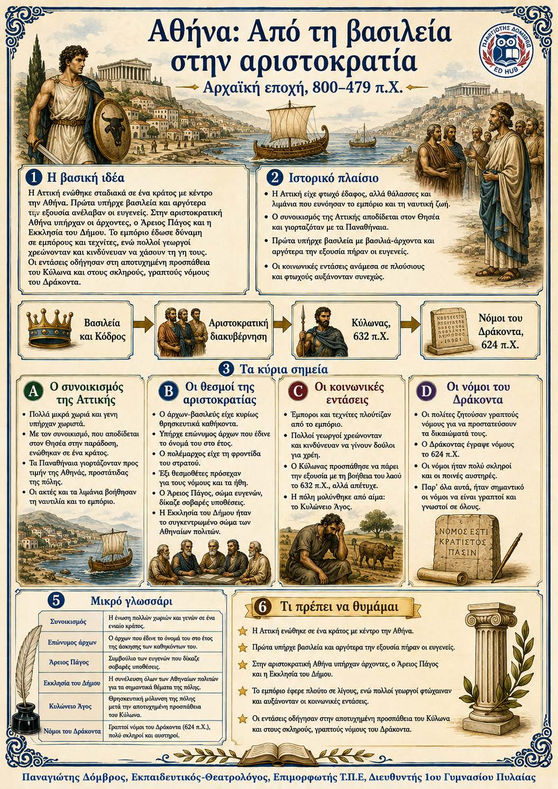

Πληροφοριογράφημα ενότητας
Το πληροφοριογράφημα αυτής της ενότητας δεν έχει ανέβει ακόμη. Οι σημειώσεις παραμένουν πλήρως διαθέσιμες.

Κεφάλαιο 4 · Αρχαϊκή εποχή, 800–479 π.Χ.
Η Αττική ενώθηκε σταδιακά σε ένα κράτος με κέντρο την Αθήνα. Το πρώτο πολίτευμα ήταν η βασιλεία, αλλά αργότερα την εξουσία πήραν οι ευγενείς. Στην αριστοκρατική Αθήνα υπήρχαν άρχοντες, ο Άρειος Πάγος και η Εκκλησία του Δήμου. Η ανάπτυξη του εμπορίου έδωσε δύναμη σε εμπόρους και βιοτέχνες, ενώ πολλοί αγρότες βυθίστηκαν στα χρέη. Οι κοινωνικές εντάσεις οδήγησαν στην αποτυχημένη προσπάθεια του Κύλωνα και στην καταγραφή των πολύ αυστηρών νόμων του Δράκοντα.
